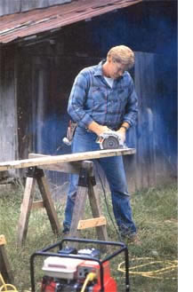
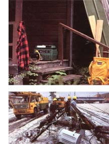
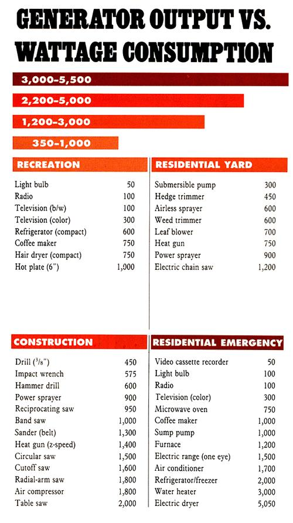
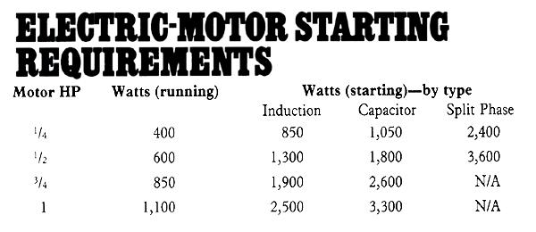

AT LAST-THE WEEKEND IS HERE and you're ready to knock off those few chores and kick back to relish what may be the last of an all-too-short Indian summer. The shopping's done, the freezer's full, and all is right with the world. There's plenty of time to catch news and weather in the a.m.; right now you're going to enjoy the moment doing what you like doing best: absolutely nothing. Who'd guess that within 24 hours, you'll be slogging through an ankle-deep quagmire in the black of the basement, foraging for hurricane lanterns and muttering under your breath-still accomplishing nothing but not enjoying a moment of it.
Welcome to yet another power failure. Statistically, utility outages occur with almost the infrequency of jackpots and fatal lightning strikes: During 1988, the average home was without power only about two hours in the year.
<< The ability to supply your own electricity can be a real worksaver if building projects take you to areas beyond the reach of an extension cord.
Rural residents, though, can't depend on that kind of reliability. Overgrown rights-of-way, exposure to the elements, and inaccessibility all stack the odds against the country dweller. And statistics don't always reflect the damage wrought by extended outages-the long stretches, which burst plumbing, thaw freezers, and shut down pumps, furnaces and electrical appliances at the risk of hundreds or even thousands of dollars in losses.
THE FACT IS, NO ONE HAS TO BE AT the mercy of such misfortune, regardless of whether- it's brought on by natural causes or by equipment failure. Hospitals, dairy operations and businesses that bank on 100% reliability all have standby generators that kick in the moment utility power drops out.
If you're ready to commit to that kind of auxiliary system, or if your homesite is so isolated that a utility tie-in would be prohibitively expensive, a permanent home power plant may be the best solution. Otherwise, a portable generator sized to your needs can provide effective and reliable insurance against everything from inconvenience to sheer disaster.
>> Outdoor recreation may very well take you to areas isolated from a regular power supply. A small generator can operate lights and other equipment.
>> Even a single power failure can cause financial losses if it lasts more than a few hours or so.
Choosing a generator on the basis of output alone is hardly prudent. The device's wattage is really a relative measure-losses in the power cord, and the diverse character of different tools and appliances, make it necessary to plan the work load to some degree (see chart). Even less obvious factors are important: Quiet operation, fuel consumption, running time per full tank, and working weight are all significant when you're faced with actually using the tool.
And how would you use a portable generator? The dozen or so manufacturers have worked to tailor their machines to specific markets, especially over the past five years. The result is a line of offerings in each of three categories: recreation, residential and construction work. But feel free to translate these labels loosely; once you know the criteria, you'll understand better how to meet your own requirements.
Generators made for recreation are usually compact, lightweight, quiet and uncomplicated machines ranging in output from 350 to 1,000 watts. They're made for "convenience" camping, for RV and boating use, or for charging batteries.
Residential models are enclosed, long-running, very quiet and substantial enough to power the necessities of an average household-a muster which can be considerable. With wattage ratings between 3,000 and 5,500, these heavy-duty generators can weigh over 200 pounds and are often equipped with wheels to make them portable. But there are also smaller home and yard models, with outputs of 1,200 to 3,000 watts, that have many of the same userfriendly features of their bigger counterparts in a package less than half the weight. Reason? Many people will use them to supply juice to yard equipment and power tools where there's no service line, and will keep them on hand for electrical outages, too.
The construction generators are favored by builders and work crews because of their nofrills economy. They have the power-2,200 to 5,000 watts-to drive multiple and heavy-duty tools but are still light enough to carry to job sites.
AMONG ALL THE MODELS AVAILABLE,I managed to count over 25 features touted by the various manufacturers. Many are standard within an application or price range; others are pleasant conveniences; and some may even sell you on a particular model.
Any generator typically consists of a gasoline engine mounted directly to an alternator, with both units protected within a frame or housing. The engines are largely air-cooled four-strokes, though two-cycles are used on small recreational models, and diesel power plants on several larger units. There is even a twin-cylinder water-cooled design.
Electrical power is delivered through one or more 110-volt AC outlets. Some midrange and larger generators include a 240-volt AC outlet, and quite a few models have a 12-volt DC battery charger as well. All include in ternal fuse or circuit breaker protection.
The engine features are nearly self-explanatory and borrow heavily from the auto industry, to the consumer's advantage. Electronic ignition, fuel and temperature meters, and radio interference suppression (to control static) are almost universal. So is a USDA-approved spark-arresting muffler and some type of antivibration system. Electric starters and automatic chokes are option all on midrange models, but these are standard on most of the larger units.
Perhaps less well known are features that have helped to bring generators up to date. Overhead valves let the engine run cooler, with less oil consumption, more power and greater fuel economy. The higher compression OHV engines have given rise to automatic decompression valves on some manual-start models, so they'll crank easily. And because regular maintenance checks are easy to forget, an oil level monitor shuts down the engine when the crankcase reservoir gets dangerously low.
An economy idle control is useful when you're operating power tools sporadically; it keeps the throttle at idle when there's no electrical load on the generator and automatically brings the engine up to speed when power's needed. A remote control cable allows you to fire up electric-start machines from a distance-a handy feature to have at work sites.
The intricacies of any particular electrical generating unit may be more of a mystery, but you can take comfort in the fact that the basic design is shared by all the manufacturers. Alternators, with their rotating fields, are favored because they're compact and don't have to rely on maintenance-prone brushes. Full-copper windings are a plus, as is a separate winding for the alternator's field to isolate it from the output work load.
Aside from the aforementioned engineering features, there are other options that you may find handy for everyday use. On midrange and larger generators, dual voltage (120/240 VAC) permits the use of 220-volt tools and motors, and a full-capacity option allows the full rated power to be taken from a single outlet if needed. It's also convenient to be able to draw simultaneous AC/DC power in the event you have to charge a battery while operating a tool or appliance. That charger, by the way, should have a DC prorector to prevent feedback damage from recirculating current.
As the generator size increases, electrical monitoring devices tend to be included in the package. Output voltage is normally controlled through an internal voltage regulator; a voltmeter and adjustment knob may be included. On some generators, a frequency meter keeps you aware of any variation from the standard 60-hertz power cycle, which synchronous motors and solid-state equipment need to operate safely.
FOR THE MAJORITY OF PEOPLE, GETTING power to where it's needed is simply a matter of using heavy-duty outdoor extension cords. Though possibly inconvenient during power outages, that method is fine for work and recreational hookups.
But for true emergency backup, especially with high-output generators, a transfer switch connection is the most sensible way to go. Why? Water heaters, well pumps and other large appliances are hard-wired-not plugged-into junction boxes. It would be difficult and dangerous to disconnect that wiring and tie it in to the generator lead.
It is far better to plan ahead and have an electrician install an outside connection box and transfer switch. That way, the generator can be positioned near the connection box (which offers a weatherproof cord hookup), and emergency power can be sent directly to the home's standard wiring system through the transfer switch (which mechanically disconnects the utility service when the generator is working, to prevent the generated power from backing up into the service lines and endangering utility workers).
A word to the wise: No matter how you may plan to use the generator, make it a point to ask the dealer about the types of receptacles installed on 240-volt models. Aside from a number of straight-blade designs, there are also a couple of vibration-proof twist-lock outlets used, and it's critical that your power cord be compatible at both ends with the equipment you're using.
Finally, don't make the mistake of underestimating your needs. Use the accompanying sidebar and chart to map out your requirements in advance so you'll have enough reserve power to handle simultaneous demands and the initial loads that come with starting electric motors. Honda has developed a generator test set that uses the customer's appliances to gauge generator performance, and you may run across a dealer with a load simulator that approximates the demand on a particular model.
Even if you're not enthusiastic about the mechanical aspect of generators, it's a relief to know that you can have control in the face of irrepressible emergencies brought on by unforeseen forces. Maybe that's why the machines are called power generators.
GENERATORS ARE USUALLY classified by their maximum, or "peak," wattage output-a figure that's 10 to 20% greater than the machine's continuous, or "rated," power. That extra boost is there to absorb temporary electrical loads, but not for periods of more than a few minutes; after that, the equipment begins to overheat, and the generator may shut itself down.
To gauge your requirements accurately, check the specification plates on the tools or appliances you plan to operate. If wattage is listed, that's fine-generators are rated in watts, too. If the plate gives an amperage rating, multiply that figure by 120 (the working voltage of most household equipment) to convert to watts. (Multiply 220-volt appliances, similarly, by 220.) If you need to operate several tools or appliances simulta neously, add their wattage figures together to get the total continuous generator output required.
That's simple enough, but there's a fly in the ointment. Electric motors can draw between two and six times their normal running current while starting, depend ing upon the type of motor used. That extra amperage requirement directly affects the number of watts needed by the refrigerator, blower or pump you hope to operate. The small chart directly below shows the running and start-up wattage of several different-sized motors by type. The larger chart indicates the power used by some common tools and appliances while in operation.
American Honda Motor Co., Inc.
100 West Alondra Blvd.
Gardena, CA 90248 Coleman Powermate, Inc.
125 Airport Rd.
Kearney, NE 68848 Generac Corporation
P.O. Box 8
Waukesha, WI 53187
Homelite Division of Textron, Inc.
14401 Carowinds Blvd.
Charlotte, NC 28217
Kawasaki
9950 Jeronimo Rd.
Irvine, CA 92718
Kohler Co.
Kohler, WI 53044
Onan Corporation
1400 73rd Ave. NE
Minneapolis, MN 55432 Pincor Power Corporation
3700 N. Acorn Ln.
Franklin Park, IL 60131 Winpower Generator Division
The Pierce Co., Inc.
P.O. Box 2000
Upland, IN 46989
Yamaha Motor Corporation, USA
P.O. Box 6555
Cypress, CA 90630
Yanmar Diesel Engine (USA) Inc.
1424 N. Hundley St.
Anaheim, CA 92806
|
 MICHEAL SOLURI |
 TOP:© MICHEAL SOLURI BOTTOM:©DAVID FALCONER/F/ STOP PICTURES |
 |
|
 |
|
|